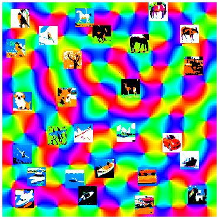

JMLR Workshop and Conference Proceedings
Workshop held at ICML 2011, |
 |
| Supplemental
material (challenge, datasets, fact sheets) |
Introduction
- ICML2011 Unsupervised and Transfer Learning Workshop
- D.L.
Silver, I.
Guyon, G. Taylor, G. Dror
& V.
Lemaire; 27:1-16, 2012.
[abs] [pdf]
Fundamentals and theory
- Deep Learning of Representations for Unsupervised and Transfer Learning
- Y.
Bengio; 27:17-36, 2012.
[abs] [pdf]
- Information Theoretic Model Selection for Pattern Analysis
- J.M.
Buhmann, M.H.
Chehreghani,
M. Frank & A.P.
Streich; 27:51-64, 2012.
[abs] [pdf]
Challenge contributions
- Unsupervised and Transfer Learning Challenge:
a Deep Learning Approach - G.
Mesnil et
al; 27:97-110, 2012.
[abs] [pdf]
- Stochastic Unsupervised Learning on Unlabeled Data
- C.
Liu, J. Xie, Y.
Ge & H. Xiong; 27:111-122, 2012.
[abs] [pdf]
Advances in transfer learning
- Transfer Learning with Cluster Ensembles
- A.
Acharya, E.R.
Hruschka, J. Ghosh & S. Acharyya; 27:123-132,
2012.
[abs] [pdf]
- Divide and Transfer: an Exploration of Segmented Transfer to Detect Wikipedia Vandalism
- S.-C. Chin
& W.N. Street;
27:133-144, 2012.
[abs] [pdf]
- Self-measuring Similarity for Multi-task Gaussian Process
- K.
Hayashi, T. Takenouchi, R. Tomioka H. Kashima; 27:145-154,
2012.
[abs] [pdf]
- Transfer Learning for Auto-gating of Flow Cytometry Data
- G.
Lee, L.
Stoolman & C. Scott; 27:155-166, 2012.
[abs] [pdf]
- Inductive Transfer for Bayesian Network Structure Learning
- A.
Niculescu-Mizil
& R. Caruana; 27:167-180, 2012.
[abs] [pdf]
- Unsupervised dimensionality reduction via gradient-based matrix factorization with two adaptive learning rates
- V.
Nikulin &
T.-H. Huang; 27:181-194, 2012.
[abs] [pdf]